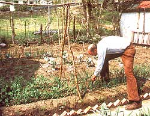

REPORT FROM:
Leaving Dandelion Farm was one of the most painful things my husband "Sleepy" and I have ever done. Like other MOTHER folk, we'd dreamed for years about owning a little piece of the good life. We even practiced for the big move by foraging for wild foods in vacant fields, and by gardening on our tiny city lot . . . interspersing green beans with the roses and planting squash in the ornamental rock garden. But mostly, we just planned, and saved, and dreamed, and talked . . . and planned some more.
When we finally found our land and made the big move, it was as if the elusive dream had come true: There it was, Dandelion Farm, nestled into a bend of a pretty little creek, waiting for us at the end of a quarter mile of winding drive. It was so beautiful!
Well, we put the next seven years into building that particular castle in the sky, and when we finally had to admit that we were beaten, we felt totally lost. We didn't know where to go from there, and we couldn't imagine who we'd be when we got to wherever it was we'd go. Our identities were so bound up in our self-image as back-to-the-landers, living in gentle harmony with the earth, that leaving was a real emotional blow. Besides-we had to admit it-we had failed .
Why? Well, age , for one thing . . . Sleepy and I were not youngsters. Coping with a perpetually cold, 140-year-old house-with no indoor plumbing-was another reason. Most of all, though, it was probably inexperience combined with two years of incredibly harsh summer droughts and winter storms that finally did us in.
Sounds like a sad story, doesn't it? We were sad, believe me. But we didn't give up. My mate and I decided to find the best life we could, no matter where we were. And as it has turned out, we've found that good life in a small Victorian house in the little town of Excelsior Springs, Missouri. In fact, we began turning the place into our new dream the day we moved in.
Right away, I fell in love with the three old plum trees in the backyard and the vestiges of rhubarb showing along the north fence . . . someone else had once used this place to try to live close to the land. My husband and I tilled the soil in half of the backyard and claimed it as our garden space. By using raised growing beds and intensive gardening, we got an amazing yield from our tiny 15' X 20' plot the first year: beans, peas, onions, tomatoes, cabbage, broccoli, kohlrabi, squash, beets, lettuce, radishes, and whatever else we felt like experimenting with.
Then, three years ago, my interest in herbs outgrew the space we'd allotted them, and we began digging up the yard again. A curving herb bed now connects the garden to the side yard and overflows with sage, catnip, lemon balm, gray santolina, lavender, and mint. The comfrey has its own space outside the garden, and anything we don't grow , we can get by swapping with neighbors or foraging for in the nearby park.
Ah, the park . . . the free-growing blackberries we find there give us all the jellies and syrups we need, and the wild greens and morels add even more variety to our menu. (OK, so maybe we don't "own" the native edibles we pick, as we did on the farm. But does anyone ever really own nature's gardens?)
And we've made significant strides toward self-sufficiency inside our home, too. I've fashioned homemade solar energy storers by filling black-painted plastic milk jugs with water and placing them in the south-facing windows. And last year, instead of installing clear plastic on the inside of the one southern portal that isn't protected with a storm window, I used black plastic with a small vent hole cut at the top . . . surprisingly, that simple setup turned out to be an efficient, super-inexpensive heat grabber!
Still experimenting, I found that pop-in plastic-foam shutters help cut nighttime heat loss and are easy to store in the daytime. Insulated curtains made from old quilts also help keep the evening chill outside, while we insulate ourselves by snuggling under a homemade comforter.
For a long time, we debated the practicality of buying a ceiling fan for the living room . . . Sleepy lost his job in April of 1982, and money gets a good squeeze around here before we let it get away. When we finally purchased the air mover, though, we soon realized we'd made the right decision. With our high Victorian ceilings, the fan is a lifesaver on hot summer days. And in winter-set on low speed-it blows warm air from the stove into every room of the house. (The folks who designed and built these turn-of-the-century Victorian houses were no dummies: The high ceilings make it possible to store a lot of heat, and the connecting doors between all the rooms promote efficient circulation.)
This fall we finally installed our antique woodstove . . . an investment we'll never regret. Now, the gas furnace goes on only well after midnight, and we keep it at a low enough setting that it runs very little. Our vintage stove does burn more wood than a modern, airtight heater, but with the doors open it converts into a cheery fireplace, and the oven directly over the firebox turns out a procession of rolls, pies, toasted cheese sandwiches, and even stews. The top also has lids like a cookstove, so-all in all-our old beauty adds a surprising amount to our independence.
Growing toward self-sufficiency is an organic thing, and, as such, takes time. Our plans often seem to take shape slowly, but the changes are steady and positive. Natural gas prices have more than doubled in the last two years, and electrical costs have jumped as well, but we've kept pace and even lowered our monthly bills.
Did we lose our identities when we left Dandelion Farm? Did we "fail" as we were convinced we had at the time? Now, I can see that while Sleepy and I may not be farmers, living close to nature doesn't have to mean owning 20 acres and using an outhouse. Here in town, we still grow our own food and heat with wood. My clothes still dry in the fresh air and smell sunny. Certainly, the wildlife on the farm was delightful, but we've had a fox, raccoons, and possums visit us right here on our little Victorian homestead. We also feed hundreds of birds, and share our garden with beneficial toads and ladybugs. The deer come to drink in the park only two blocks away, and an old Tom turkey and five of his lady friends cross the road not three blocks from our house. And to top off the wildlife scene, a great blue heron fishes in a nearby creek and takes flight majestically on its seven-foot wingspan at our approach.
We may have failed as farmers-and perhaps as bona fide back-to-the-landers-but I think we're two of the happiest "failures" you're ever likely to meet. No sir, if I were asked to give advice today about buying a farm, I'd say, "Great idea! Do it if you have the youth, strength . .. and money. If not, look around at the possibilities right where you are ."
After all, Sleepy and I have learned from experience that dreams don't really die . . . they just change form.
|
 ""Sleepy"" works the soil on the Johnson family's urban homestead. |
|
|